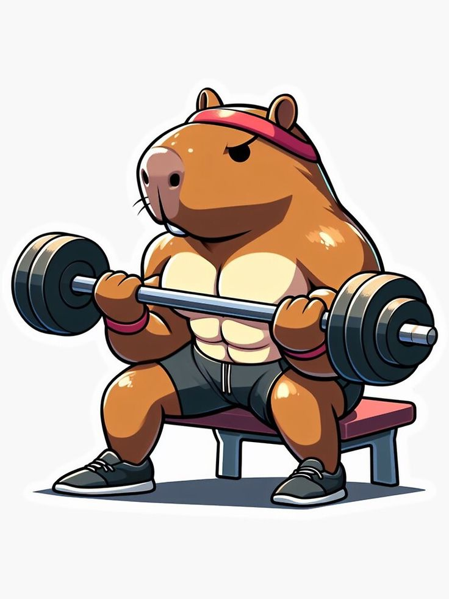

La nutrición y el ejercicio están estrechamente relacionados, ya que el cuerpo necesita más energía y nutrientes al hacer actividad física. Una buena alimentación y ejercicio regular pueden ayudar a: Mejorar el rendimiento físico, Favorecer la recuperación muscular, Aportar energía para el ejercicio, Contribuir al desarrollo de masa muscular, Ayudar a prevenir enfermedades.
